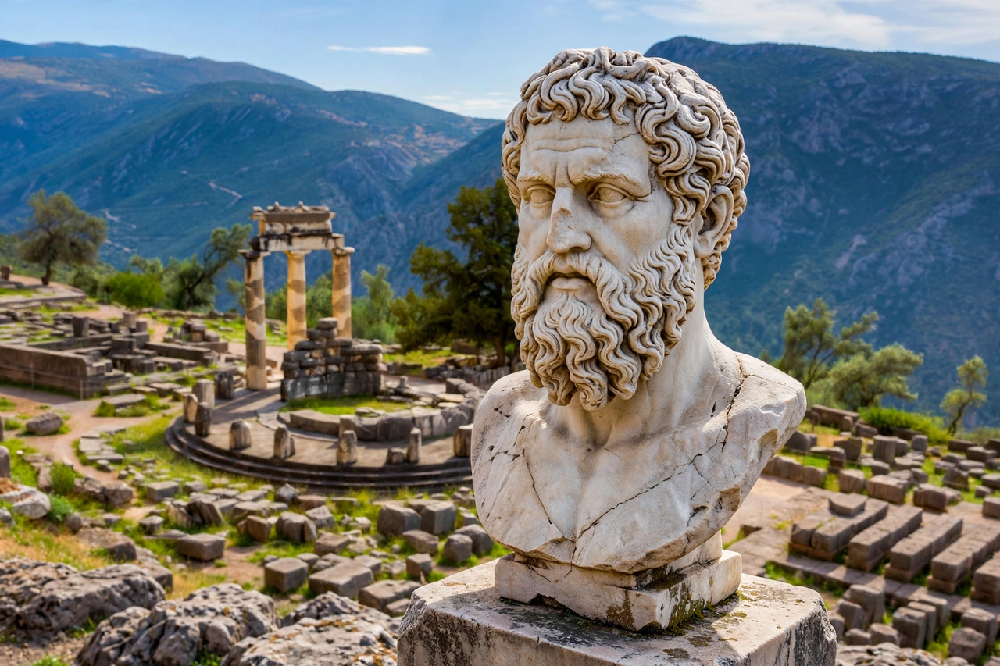

Plutarch (c. AD 46 – after 119), later named Lucius Mestrius Plutarchus on becoming a Roman citizen, was a Greek Middle Platonist philosopher, biographer and essayist from Chaeronea in Boeotia. He is famous for the Parallel Lives, paired biographies of Greek and Roman statesmen written to illuminate character, and for the Moralia, a miscellaneous collection of essays that shaped European moral thought for centuries.
| Plutarch | |
|---|---|
| Born | c. AD 46, Chaeronea, Boeotia |
| Died | After AD 119 |
| Occupation | Biographer, essayist, priest at Delphi |
| Major works | Parallel Lives; Moralia |
Plutarch studied at Athens under the Platonist Ammonius, travelled in Egypt and Italy, and lectured in Rome, acquiring Roman citizenship and the friendship of prominent Romans. He remained rooted in Chaeronea, serving as a local magistrate, and for the last thirty years of his life was a priest of Apollo at Delphi, helping to revive the shrine's prestige.
The Lives pair a Greek with a Roman — Alexander with Caesar, Demosthenes with Cicero, Theseus with Romulus — usually followed by a brief comparison. Plutarch declared that he wrote "lives, not histories", pursuing the signs of the soul in small acts and sayings rather than in famous battles. Twenty-three pairs and four single lives survive. In Jacques Amyot's French translation (1559) and Thomas North's English version (1579), they became a principal source for Shakespeare's Roman plays and a favourite book of Montaigne, Rousseau and the American Founders.
The seventy-eight surviving treatises collected as the Moralia range over ethics, education, religion, politics, natural questions and literary criticism, including the dialogue On the Pythia's Prophecies and the treatise On Isis and Osiris, a key source for Egyptian religion.